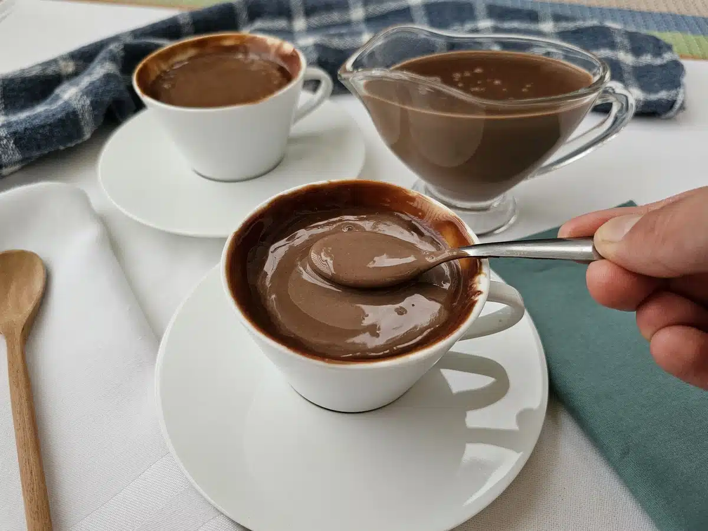

Tem gostinho de brigadeiro!
O chocolate quente com leite condensado fica bem cremoso e sem gruminhos.
A gente aconselha a preparar com chocolate 50% para não ficar muito doce.
Para os chocólatras de plantão, ganache na decoração. Se quiser, uma camada de chantilly.
500 ml de leite integral
1 colher de sopa de amido de milho
1/2 caixa de leite condensado
3 colheres de sopa de chocolate em pó 50%
1/2 caixa de creme de leite (100 gramas)
Ganache para decorar
Reúna todos os ingredientes
Em uma panela fora do fogo, despeje um pouco do leite e dissolva o amido de milho
Adicione o restante do leite, o leite condensado e o chocolate em pó. Misture bem e ligue o fogo.
Deixe levantar fervura, conte 3 minutos e desligue (mexendo sempre)
Coloque o creme de leite e misture até incorporar
Decore uma caneca passando ganache por dentro
Despeje o chocolate quente e sirva!
Para acompanhar a receita em video Clique aqui